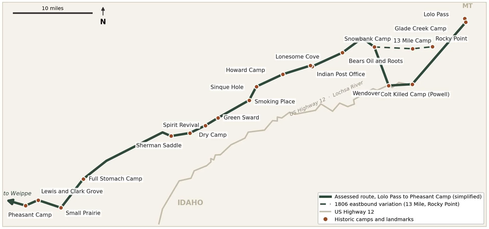
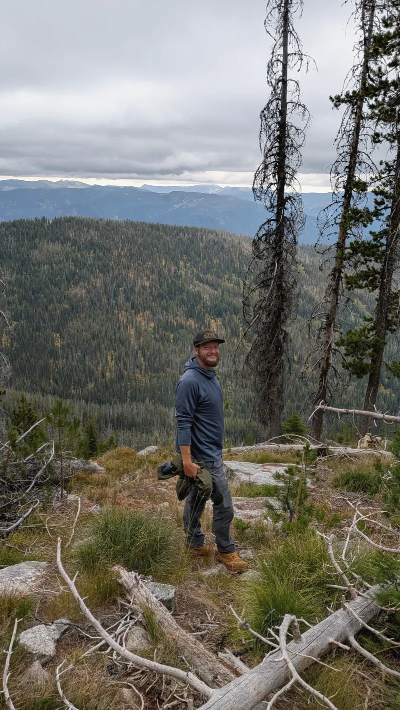
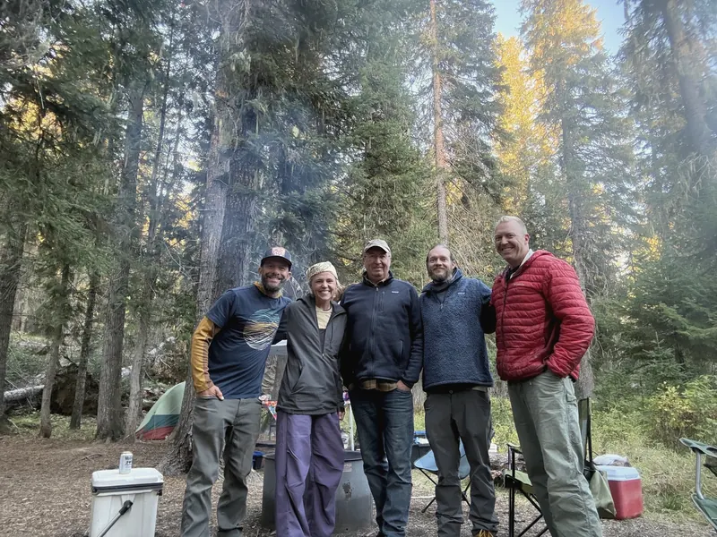
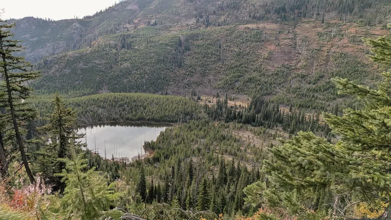

The question
The Lolo Trail is the route the Corps of Discovery took over the Bitterroot Mountains in September 1805, following a much older Nez Perce road. Today it's a patchwork of maintained tread, buried tread and no tread at all, crossed by Forest Service Road 500 and split by checkerboard land ownership. Over the last several years windstorms have dropped thousands of trees across both the trail and the road.
The Director of the Lewis & Clark Trail Alliance asked our outfitter to answer a practical question in time for 2027 planning: which parts of Trail #25 can volunteers fix, which need paid crews, and which need partners at the table first?
Approach
Over four days we traveled west from Lolo Pass using Road 500 for access, broke the route into segments between known camps, junctions and access points, and walked or scouted every segment we could reach, often splitting up to cover more ground. At each one we recorded tread condition, downfall, markers and posts, signs of recent work, and hazards like failing bridges.
- GPS: two of us logged about 115 waypoints, notes and tracks in onX; another teammate added Strava tracks from earlier hikes.
- Rating scale: each segment got a 1–5 condition rating with a matching treatment, from "markers and routine maintenance" to "route survey, then a professional construction crew."
- Cross-check: we compared our ratings with Charles Raddon's September 2026 survey of the parallel Nee-Me-Poo ridgeline route, and recommended both efforts adopt his scale definitions so the data line up.



Findings
About half of the route is in good shape or close to it. The rest ranges from buried or intermittent tread to stretches where we could find no trail at all. The chart lists segments westbound, following the 1805 route; where we gave a range, the bar shows the worse end.
* Raddon's rating; our team did not locate this segment. Howard Camp → Sinque Hole follows Road 500 and is left to an agency decision; Pheasant Camp → Weippe Prairie was not assessed.
The cheapest fix is also the most common need: trail markers and segment signs. Several of the best access points, including Lolo Pass, Powell and Lochsa Lodge, and Wilderness Gateway, are hard to follow without them, while the interpretive signage is in good shape.
Recommendations
- Markers first. Route marking at the main access points, plus segment-name and length signs.
- Quick volunteer wins. Segments like the Glade Creek connector, White Sand Creek to Wendover, and Lewis and Clark Grove to Small Prairie could be opened by a volunteer crew in a day or two.
- Paid crews for the hard parts. Lonesome Cove to Howard Camp, Willow Ridge to Hungery Creek and Bald Mountain to Dry Camp need certified sawyers, tread construction, and someone who knows where the historic route runs.
- Partnerships for access. Checkerboard ownership, Road 500 access and other groups' ongoing work point to a partnership with the Forest Service, the Nez Perce Tribe, landowners and local organizations.
- Shared data. Use one condition scale across efforts so surveys can be compared year to year.


What I did
On the ground I recorded field GPS data and notes in onX alongside a teammate. Afterward I built the segment inventory worksheet, reconciled everyone's tracks, waypoints and field notes, mapped them against Raddon's survey, and wrote and compiled the 34-page report and appendices.
It's the kind of work I want more of: a real decision that has to be made, messy evidence from several sources, and a result that the people doing the work can pick up and use.